vue源码笔记
以下所有路径的 * = node_modules/vue
零、生命周期图

一、初步认识Vue
1、vue的编写规范
主要是用Flow，还有ts
2、源码目录
src
├ compiler #编译相关
├ core #核心代码
├ platforms #不同平台的支持（web，weex）
├ server #服务器渲染
├ sfc #对.vue文件的解析
├ shared #公用部分，存放一些静态变量名，工具类
3、源码构建
基于Rollup，构建相关配置在package.json的scripts下，run不同的语句会编译出不同的vue版本。
4、vue入口
最上层的Vue类在*/src/core/instance/index.js。在这里会Mixin（混入）各种各样的模块，完成Vue的初始化。
二、数据驱动
Vue.js一个核心思想是数据驱动。所谓数据驱动，是指视图是由数据驱动生成的，我们对视图的修改，不会直接操作DOM，而是通过修改数据。它相比我们传统的前端开发，如使用jQuery等前端库直接修改DOM,大大简化了代码量。特别是当交互复杂的时候，只关心数据的修改会让代码的逻辑变的非常清晰，因为DOM变成了数据的映射，我们所有的逻辑都是对数据的修改，而不用碰触DOM，这样的代码非常利于维护。
1、new Vue发生了什么
执行了*/src/core/instance/index.js 中的构造函数，并且进入到this._init(options)中（_init在*/src/core/instance/init.js中），会经历一系列的初始化，判断是否有重名，然后将数据、方法、props等挂载到vm上
2、实例挂载实现了什么
Vue中我们是通过$mount实例方法去挂载vm的，$mount 方法在多个文件中都有定义，如*/src/platform/web/ entry- runtime-with-compiler.js、*/src/platform/web/ runtime/ index.js、*/src/platform/weex/ runtime/index. js。因为$mount这个方法的实现是和平台、构建方式都相关的。
$mount在index.js > initMixin(init.js中定义) > Vue.prototype._init = function{…… if (vm.$options.el) {vm.$mount(vm.$options.el) } }这里执行。（前面（即…处）执行了beforeCreate、created两个钩子，即生命周期的顺序。）
$mount是在entry-runtime-with-compiler.js（在带compiler的 版本中）中定义的。首先会把template（有多种方式获取）编译了，拿到render函数，然后再执行在Vue原型上的$mount。在Vue原型上的$mount上是有mountComponent的（在runtime-only版本中的index.js），mountComponent（在lifecycle.js中）调用beforeMount钩子，然后就是new Watcher() （在这new出来的是个渲染watcher），然后就mounted钩子了。
mountComponent函数在之后的更新视图中也会用到。
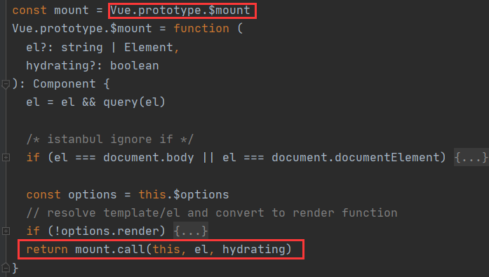 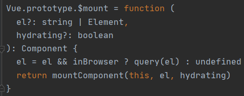 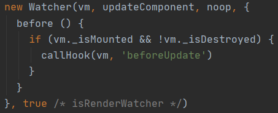 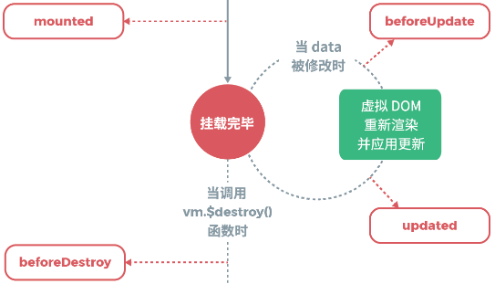总结：Vue实例里总会有一个render函数，如果定义的时候没有render函数，就会在执行过程中编译出一个render函数。在cli中，会有选择runtime-with-compiler/runtime-only，这个的意思就是，如果你选择runtime-with-compiler版本，就默认不认为你在定义的时候传入一个render函数，而是通过template、el、component等编译出render函数，然后再执行runtime（也即runtime-only）里的内容。选择runtime-only就意味着你在定义的时候就要传入一个render函数了，然后再设置挂载到哪个dom上。挂载过程：runtime-only.js内的$mount(){mountComponent}->mountComponent在lifecycle.js内有导出，在挂载的过程中，会new Watcher（没有执行），最后才挂载完成（即调用mounted钩子）。
new的这个Watcher就会实时观察到data的变化，虚拟DOM会重新渲染并应用更新（但其实这个过程中并不会再有mounted调用）（就如代码中，updateComponent执行了_update函数，_update函数执行了渲染函数）
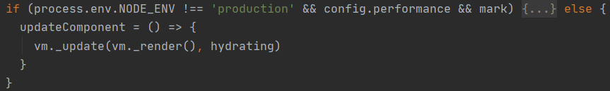Watcher类在 */src/core/observer/watcher.js，watcher与响应式关系很强，之后更详细讲解。
ps.在mountComponent过程中，new的这个渲染watcher第二个参数传入的是updateComponent函数，new，然后进入到Watcher类内部，最后会执行this.get()，get函数是在Watcher类内部的，get函数内有this.getter = expOrFn（也即this.getter = updateComponent），该函数内部会以call的方式执行getter/updateComponent，并传入一个vm，但是这里的updateComponent是不接收任何参数的，所以猜测除了渲染watcher之外还有其他类型watcher，这里即使传入了vm给updateComponent也不做任何处理，仅updateComponent内部执行_update，_update内部执行_render，_render会返回一个vnode到_update（render细节见后文），然后这时才进入到_update函数体内，内部就会执行更新视图。这里传入的参数估计是为了其他类型watcher所设计。

3、render
路径：*/src/core/instance/render.js
Vue.prototype._render首先会取得vm.$options里的render函数（上面说过了render函数一般怎么生成的），然后以 vnode = render.call(vm._renderProxy, vm.$createElement) 的方式创建一个vnode，其中vm._renderProxy在init的时候已经创建好了，如果是在生产环境下就是vm本身。$createElement在render.js中initRender的（initRender在init.js里，初始化的时候就有执行了）开头有两种定义，第一种是用于编译出来的render函数，第二种是用户提供的render函数。实际上render拿到的返回值就是createElement的返回值。
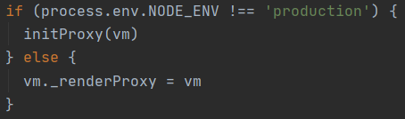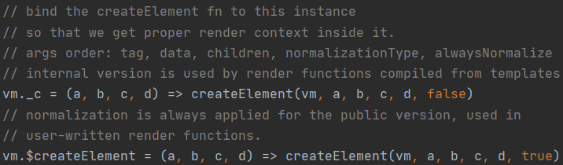
4、Virtual DOM
Virtual DOM就是用一个原生的JS对象去描述一个DOM节点，所以它比创建一个DOM的代价要小很多。在Vue.js中，Virtual DOM是用VNode Class去描述，它是定义在src/core/vdom/vnode.js中的。
其中 data: VNodeData | void; 这个属性，期待的 VNodeData 类型在 */types/vnode.d.ts 中有定义。
其实Vue.js中的Virtual DOM是基于一个叫snabbdom的开源库实现的。
https://github.com/snabbdom/snabbdom
总结：其实VNode是对真实DOM的一种抽象描述，它的核心定义就几个关键属性，标签名、数据、子节点、键值等，其它属性都是都是用来扩展VNode的灵活性以及实现一些特殊 feature的。由于VNode只是用来映射到真实DOM的渲染，不需要包含操作DOM的方法，因此它是非常轻量和简单的。Virtual DOM除了它的数据结构的定义，映射到真实的DOM实际上要经历VNode的create、diff、patch 等过程。在Vue.js中，VNode的create是通过之前提到的createElement 方法创建的，实现方式见下文。
5、createElement(*)
路径：*/src/core/vdom/create-element.js
官方参数：
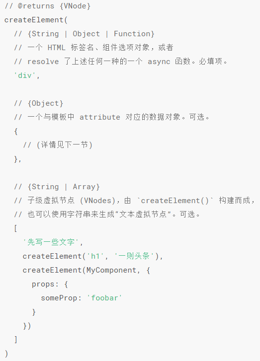主要思路：
createElement 方法内部会先判断data的类型，因为传参的时候data是可以为空，然后就把后面的参数向后移位
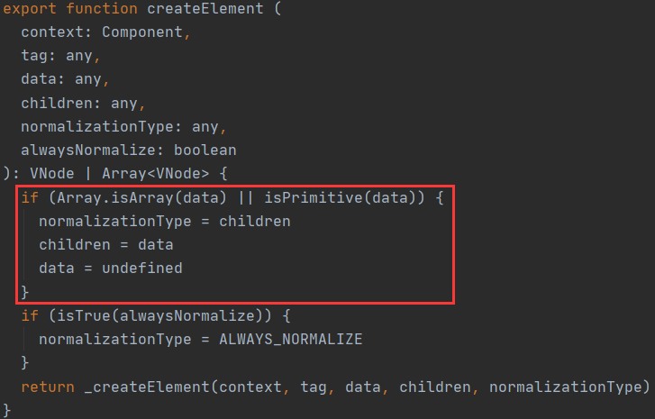最后才是调用_createElement(context, tag, data, children, normalizationType)（返回一个VNode）：
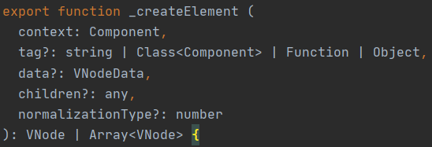1）判断传进来的data不能是响应式的，然后判断data.is(**)，如果有这个属性，就会进行相关的处理。（注意，在标签内使用v-bind:is，data.is也是undefined！因为这两个不是一样的东西！）。
2）判断“normalizationType === ALWAYS_NORMALIZE”，因为当我们手写render函数的时候，经常children那一项（即第二/三项）是传一个任意的数据，但是_createElement内部运行的时候，children要是一维的Array<Node>，所以就要对传入的这个任意类型数据进行格式化，其中有两种格式化方式：simpleNormalizeChildren和normalizeChildren。前者是编译生成的render才用的简单格式化方式，后者是手写render用的，可以完全保证格式化后children是个数组（ps.在simpleNormalizeChildren过程中，有种结果是会调用normalizeArrayChildren，在这个函数里有对文本VNode进行性能优化，如果前后两个VNode都是文本，就会合并这两个VNode为一个）。
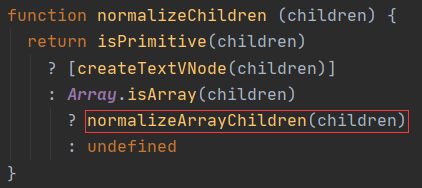3） 如果tag是标签（字符串类型）：
如果tag为HTML原生标签：
就创建一个原生标签VNode；
如果(!data || !data.pre) && isDef(Ctor = resolveAsset(context.$options, ‘components’, tag))为
真：就创建一个组件VNode；
啥都不是，就按照给定的数据创建一个特殊的VNode；
否则创建组件VNode；
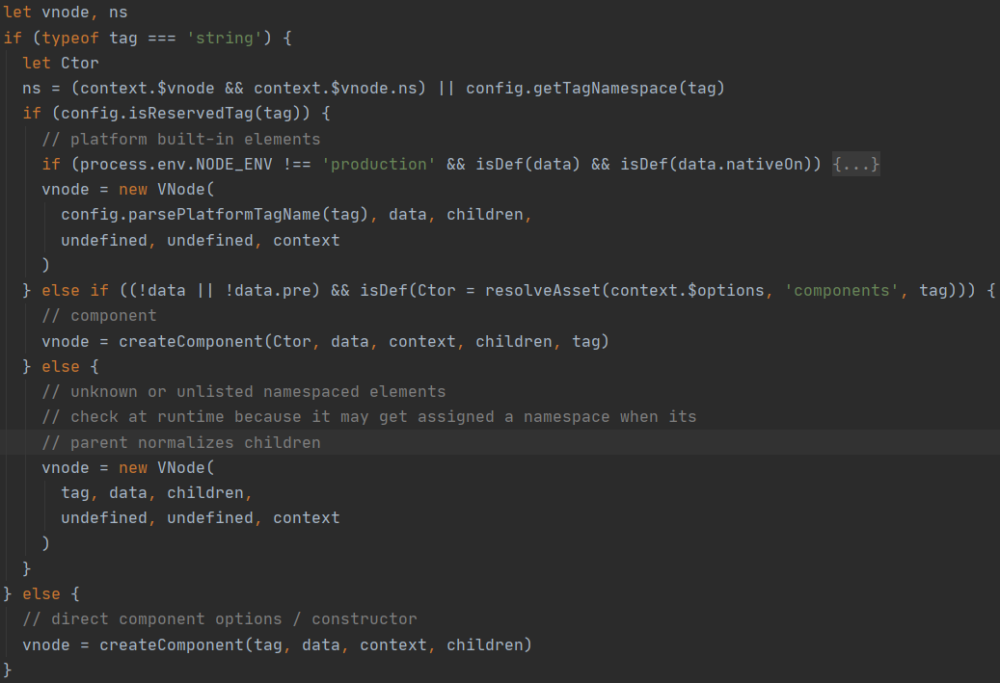关于createComponent后面讲。
4）最后就是一系列的判断和在VNode上对:class,:style的深度绑定，最后的最后_createElement返回一个VNode
*https://cn.vuejs.org/v2/guide/render-function.html#createElement-%E5%8F%82%E6%95%B0，
**这是一个有关动态组件的属性，data对象是与模板中 attribute 对应的数据对象，参考https://cn.vuejs.org/v2/guide/render-function.html#%E6%B7%B1%E5%85%A5%E6%95%B0%E6%8D%AE%E5%AF%B9%E8%B1%A1，https://cn.vuejs.org/v2/guide/components.html#%E5%8A%A8%E6%80%81%E7%BB%84%E4%BB%B6
6、update
路径：*/src/core/instance/lifecycle.js
Vue的_update是实例的一个私有方法，它被调用的时机有2个，首次渲染和数据更新。这里先只分析首次渲染，数据更新在之后关于响应式原理的时候写。_update方法的作用是把VNode渲染成真实的DOM。
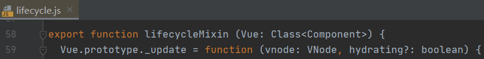在该函数中首先会判断vue实例中是否已经存在Vnode（vm._vnode），因为update有两个触发时机，首次渲染和数据更新，如果不存在Vnode即为首次渲染，会执行__patch__函数，该函数在定义到Vue原型上之前会先判断
Vue.prototype.__patch__ = inBrowser ? patch : noop;即判断是否为浏览器环境（Vue也可以在weex中，这里只讨论浏览器），patch函数在 */src/platforms/web/runtime/patch.js 中定义，由createPatchFunction赋值得到，createPatchFunction在 */src/core/vdom/patch.js 中有导出。
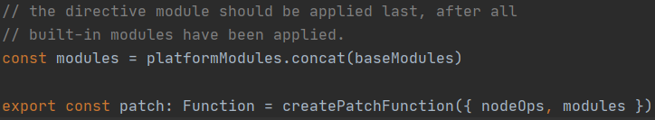createPatchFunction的参数：nodeOps是一些对DOM的操作；modules是生成标签时的一些类、属性的钩子函数，在patch过程中会调用。（snabbdom的逻辑就是，当创建一个VNode时，调用一些相关的钩子函数以生成类、属性等，每个钩子函数对应一个module对应标签内的类/属性等）。
而createPatchFunction在*/src/core/vdom/patch.js中定义，在这个函数中会把所有的hooks和modules对应起来，以达到上面说的snabbdom的逻辑，并且还定义大量的辅助函数，只为最终返回的patch函数，这个函数就是上面提到的patch函数。
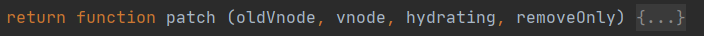为什么定义一个patch函数要绕一大圈，要经过createPatchFunction来创建：因为Vue.js可多平台运行的，为解决兼容多平台而可能造成的代码冗余，用了一种叫函数柯里化(***)的方法巧妙解决了，createPatchFunction顾名思义就是创建patch函数，在 */src/platforms/web/runtime/patch.js 中会生成对应平台（这里指web）所用到的modules，并传入createPatchFunction，这样在其他平台的使用的时候，也只需要生成其他平台所用到的modules传进createPatchFunction即可。
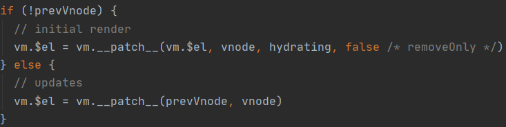
在patch中，先判断了oldVnode, vnode（分别对应于vm.$el,vnode，这里的vnode是由渲染函数创建出来的，上几节有讲）是否都有定义了，然后判断oldVnode是否为真实DOM，这里讨论首次渲染和浏览器环境的情况，所以必然为true，最后就用一个空的VNode来替代掉。
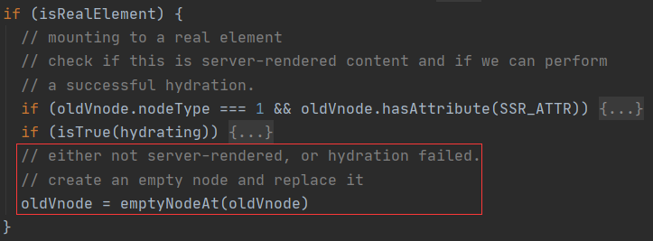这时oldVnode就真的是个VNode了，接下来要做的事情就是把vnode替换掉原来的oldVnode，即把vnode转换为真实的DOM：首先执行了createElm，该函数体内有
vnode.elm = vnode.ns
? nodeOps.createElementNS(vnode.ns, tag)
: nodeOps.createElement(tag, vnode)
setScope(vnode)
node_modules/vue/src/platforms/web/runtime/node-ops.js这里就是真正的调用原生API来创建DOM了，然后还会判断是否有子节点，如果有又会调用createChildren，createChildren又会递归调用createElm，确保所有子节点都能被创建，最后让子节点insert到父节点里面。（在insert函数内会对原生DOM进行操作）至此走完了createElm。
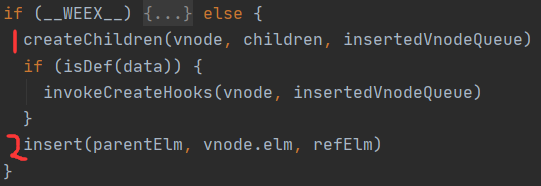回到patch中，因为是首次渲染，所以不需要递归的更新父占位节点元素，然后销毁旧的节点（在首次渲染中就是那个用于提供位点的<div id=”app”></div>），最后返回vnode.elm。
ps.hydrate：服务端渲染是相对于客户端渲染而言的(Client Side Render), 它的渲染行为发生在服务器端, 渲染完成之后再将完整页面以HTML字符串的形式交给浏览器, 最后经过”注水” hydrate 过程将一些事件绑定和Vue状态等注入到输出的静态的页面中, 由同步下发给浏览器的的Vue bundle接管状态, 继续处理接下来的交互逻辑。
***https://www.jianshu.com/p/2975c25e4d71
粗略的流程：
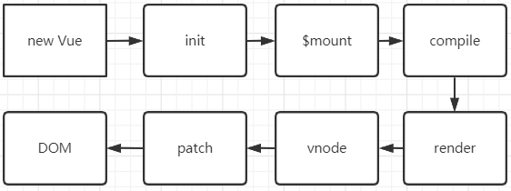三、组件化
接下来的讲解均为使用vue-cli生成的模板，自带render。
1、createComponent
路径：*/src/core/vdom/create-component.js
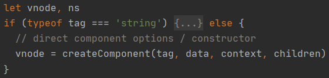在执行到_createElement的时候，里面就走的是else里的代码了，执行createComponent，本质都是生成一个VNode。
待续…
本博客所有文章除特别声明外，均采用 CC BY-SA 4.0 协议 ，转载请注明出处！